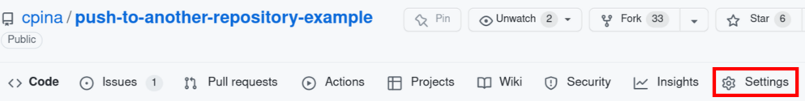
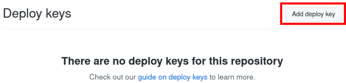
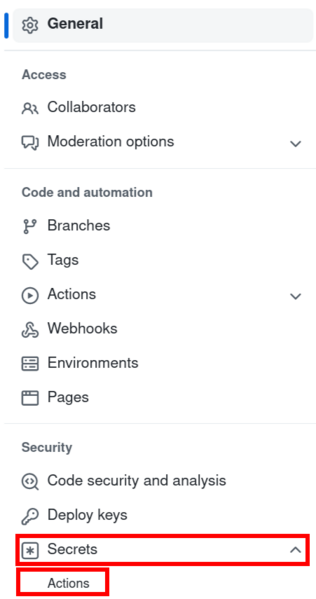
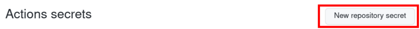
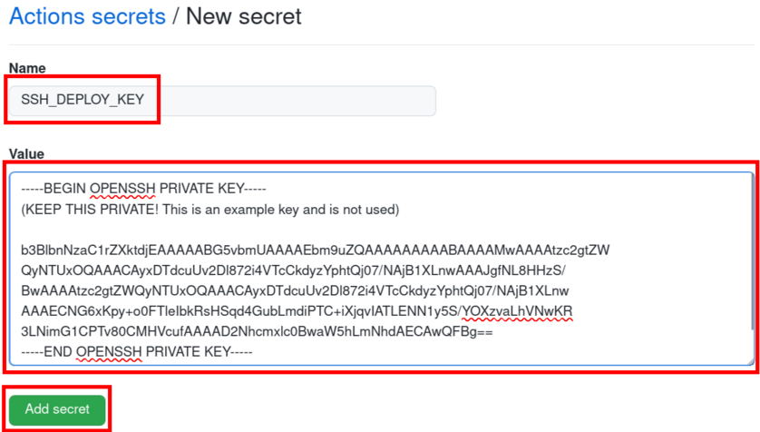

Setup using SSH deploy keys
Recommended, but the setup has a few more steps compared with the s Access Token option.
Generate the key files
In your computer terminal, generate an SSH key using, in your terminal:
ssh-keygen -t ed25519 -C "your_email@example.com"(the type of key
ed25519is recommended by the GitHub documentation.)
ssh-keygenwill ask for a file path: Enter file in which to save the key: please write a new file name. I suggest the default directory and as a filename:id_github_{name_of_your_destination_repository}to avoid overwriting a previous file. If you will be using this Action for multiple repositories, you might want to generate different keys for each one. For the repository https://github.com/cpina/push-to-another-repository-example/,id_github_push-to-another-repository-examplecould be used.Leave the passphrase empty (otherwise the GitHub Action cannot use it)
The steps above will have created two files: the private key (in the file id_github_{name_of_your_destination_repository}) and the public key (id_github_{name_of_your_destination_repository}.pub).
Full example:
$ ssh-keygen -t ed25519 -C carles@pina.cat
Generating public/private ed25519 key pair.
Enter file in which to save the key (/home/carles/.ssh/id_ed25519): /home/carles/.ssh/id_ed255^C
$ ssh-keygen -t ed25519 -C carles@pina.cat
Generating public/private ed25519 key pair.
Enter file in which to save the key (/home/carles/.ssh/id_ed25519): /home/carles/.ssh/id_github_push-to-another-repository
Enter passphrase (empty for no passphrase):
Enter same passphrase again:
Your identification has been saved in /home/carles/.ssh/id_github_push-to-another-repository
Your public key has been saved in /home/carles/.ssh/id_github_push-to-another-repository.pub
The key fingerprint is:
SHA256:qkWM49d0ecTh+d9/CoRIv/N05oYGYvu+wOreQH9PoQ4 carles@pina.cat
The key's randomart image is:
+--[ED25519 256]--+
| . |
| o o |
| . = |
| o . o + . |
| o + S = + . |
| . + *o..= . ..|
| . =.Eo=.+.o o|
| + +.= *o=. o|
| .o+ .o=oo.o.o|
+----[SHA256]-----+
$
The public and private SSH files:
$ ls -l /home/carles/.ssh/id_github_push-to-another-repository*
-rw------- 1 carles carles 411 Jul 28 09:40 /home/carles/.ssh/id_github_push-to-another-repository
-rw-r--r-- 1 carles carles 97 Jul 28 09:40 /home/carles/.ssh/id_github_push-to-another-repository.pub
$
Add public key in the destination repository
In this section, we will add the generated public key to the destination repository. This allows the Action to push there.
Go to the GitHub page of the destination repository (e.g. https://github.com/cpina/push-to-another-repository-output)
Click on “Settings” (settings for the repository, not the account settings)
On the left-hand side pane click on “Deploy keys”

Click on “Add deploy key”

Title: “GitHub Action push to another repository”
Key: paste the contents of the file with the public key. This was generated in the “Generate the key files” step and the name is “id_github_name_of_your_repository.pub”
Enable “Allow write access”

Add private key in the source repository
In this section, we will add the generated private key to the source repository. This allows the Action to push to the destination repository.
Go to the GitHub page of the source repository (e.g. https://github.com/cpina/push-to-another-repository-deploy-keys-example)
Click on the “Settings” (settings for the repository, not the account settings)
On the left-hand side pane click on “Secrets” and then on “Actions”
Click on “New repository secret”
In Name: “SSH_DEPLOY_KEY”
In Value: paste the contents of the file with the private key. This was generated in the “Generate the key files” step and the name is “id_github_name_of_your_repository”

The GitHub Action will detect the SSH_DEPLOY_KEY secret and use the private key to push to the destination directory.
Please read the troubleshooting section if you encounter problems.